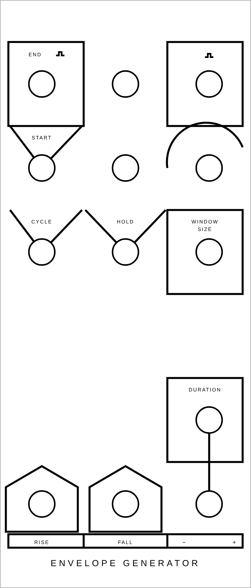

Envelope Generator (1973)
CGS76 · R7 '73 EG
A rise-and-fall envelope that always completes its cycle, with a CYCLE input for looping.
- Design
- Serge Tcherepnin, 1973; CGS76 by Ken Stone
- Function
- Envelopes
- Panel widths
- 3"
- Build options
- 3
Panels in this repo


How it works
A trigger at START runs the envelope through its rise and fall. Once started it will not reset until the cycle is finished, which allows unusual rhythmic and divided patterns.
A high gate at CYCLE makes the envelope repeat, turning it into an LFO. Timing knobs and voltage control set the stages.
Controls and jacks
| Name | Type | What it does |
|---|---|---|
| START | input | Trigger. |
| CYCLE | input | High gate makes it repeat. |
| Time knobs | knobs | Envelope stages. |
| DURATION / VC | input | Voltage control of timing (see panel). |
| OUT | output | Envelope. |
Build options
Prism Circuits Envelope Generator
- Offered as
- PCB for a 4U paperface panel (also an LW-format version)
- Format
- 4U Serge, paperface
- Schematic
- not publishedNot published by Prism
- BOM
- availableMouser project BOM, linked from the product page
LW-format version: https://prismcircuits.net/products/envelope-generator-lw
Prism's product page also links its own panel art; that artwork is Prism's and is not copied here.
Ken Stone CGS76 Serge 1973 Envelope Generator
- Offered as
- PCB from Elby Designs; schematic, parts list and construction notes on Ken Stone's page
- PCB
- Elby Designs: CGS75 PCB (the parts list names this board)
- Schematic
- availableCGS76 Serge 1973 Envelope Generator schematic
- BOM
- availableCGS76 Serge 1973 Envelope Generator parts list (in the BOM spreadsheet below)
Low-Gain LGE076 R7 '73 Envelope Generator
- Offered as
- Assembled module or DIY PCBs
- Format
- 4U Serge, Loudest Warning-style mounting
- Schematic
- listed, not linked yetBoard documents on the product page
- BOM
- listed, not linked yetBoard BOMs on the product page
Low-Gain boards set their own jack positions; check them against the panel you use.
Ken Stone's Serge-derived designs may be built for personal use only; Serge Tcherepnin keeps all rights to his circuits. Schematics, parts lists and PCBs belong to their designers and sellers, so these pages link to them rather than copying them.
Bill of materials
Spreadsheet: envelope-generator-1973.csv (CSV; opens in Excel, Numbers or Google Sheets). The Mouser columns are there to fill in with order links.
All builds (3 lines)
| Section | Type | Value / part | Qty | Notes |
|---|---|---|---|---|
| Front panel (Paperface (1973)) | Panel hardware | Banana jack, colour not recorded | 9 | 4 mm |
| Front panel (Paperface (1973)) | Panel hardware | Potentiometer + knob | 4 | value from the board BOM |
| Front panel (Paperface (1973)) | Panel hardware | Knob | 4 | one per pot |
Prism Circuits Envelope Generator (1 lines)
| Section | Type | Value / part | Qty | Notes |
|---|---|---|---|---|
| Board | See the maker's BOM | Mouser project BOM, linked from the product page - https://prismcircuits.net/products/serge-modular-envelope-generator |
Ken Stone CGS76 Serge 1973 Envelope Generator (44 lines)
| Section | Type | Value / part | Qty | Notes |
|---|---|---|---|---|
| CGS76 board | Capacitor | 100pF | 1 | from https://open4umodular.github.io/synthpanel/modules/cgs76_env.html |
| CGS76 board | Capacitor | 220pF | 1 | from https://open4umodular.github.io/synthpanel/modules/cgs76_env.html |
| CGS76 board | Capacitor | 10n | 1 | from https://open4umodular.github.io/synthpanel/modules/cgs76_env.html |
| CGS76 board | Capacitor | 100n | 3 | from https://open4umodular.github.io/synthpanel/modules/cgs76_env.html |
| CGS76 board | Capacitor | 100n 1206 SMT (optional) | 3 | from https://open4umodular.github.io/synthpanel/modules/cgs76_env.html |
| CGS76 board | Capacitor | 470n MKT or poly | 1 | from https://open4umodular.github.io/synthpanel/modules/cgs76_env.html |
| CGS76 board | Capacitor | 10uF 25V | 2 | from https://open4umodular.github.io/synthpanel/modules/cgs76_env.html |
| CGS76 board | Resistor | 33R | 1 | from https://open4umodular.github.io/synthpanel/modules/cgs76_env.html |
| CGS76 board | Resistor | 470R | 5 | from https://open4umodular.github.io/synthpanel/modules/cgs76_env.html |
| CGS76 board | Resistor | 1k | 2 | from https://open4umodular.github.io/synthpanel/modules/cgs76_env.html |
| CGS76 board | Resistor | 1k8 | 1 | from https://open4umodular.github.io/synthpanel/modules/cgs76_env.html |
| CGS76 board | Resistor | 2k2 | 2 | from https://open4umodular.github.io/synthpanel/modules/cgs76_env.html |
| CGS76 board | Resistor | 3k3 | 1 | from https://open4umodular.github.io/synthpanel/modules/cgs76_env.html |
| CGS76 board | Resistor | 6k8 | 2 | from https://open4umodular.github.io/synthpanel/modules/cgs76_env.html |
| CGS76 board | Resistor | 15k | 1 | from https://open4umodular.github.io/synthpanel/modules/cgs76_env.html |
| CGS76 board | Resistor | 22k | 2 | from https://open4umodular.github.io/synthpanel/modules/cgs76_env.html |
| CGS76 board | Resistor | 33k | 7 | from https://open4umodular.github.io/synthpanel/modules/cgs76_env.html |
| CGS76 board | Resistor | 68k | 2 | from https://open4umodular.github.io/synthpanel/modules/cgs76_env.html |
| CGS76 board | Resistor | 82k | 2 | from https://open4umodular.github.io/synthpanel/modules/cgs76_env.html |
| CGS76 board | Resistor | 100k | 5 | from https://open4umodular.github.io/synthpanel/modules/cgs76_env.html |
| CGS76 board | Resistor | 330k | 2 | from https://open4umodular.github.io/synthpanel/modules/cgs76_env.html |
| CGS76 board | Resistor | 470k | 7 | from https://open4umodular.github.io/synthpanel/modules/cgs76_env.html |
| CGS76 board | Resistor | 1M | 2 | from https://open4umodular.github.io/synthpanel/modules/cgs76_env.html |
| CGS76 board | Resistor | 1M5 | 2 | from https://open4umodular.github.io/synthpanel/modules/cgs76_env.html |
| CGS76 board | Resistor | 10M | 2 | from https://open4umodular.github.io/synthpanel/modules/cgs76_env.html |
| CGS76 board | Potentiometer / trimmer | 10k trim pot | 1 | from https://open4umodular.github.io/synthpanel/modules/cgs76_env.html |
| CGS76 board | Potentiometer / trimmer | 25k or similar trim pot | 1 | from https://open4umodular.github.io/synthpanel/modules/cgs76_env.html |
| CGS76 board | Potentiometer / trimmer | 100k lin pot | 3 | from https://open4umodular.github.io/synthpanel/modules/cgs76_env.html |
| CGS76 board | Potentiometer / trimmer | 20k lin pot (see text) | 1 | from https://open4umodular.github.io/synthpanel/modules/cgs76_env.html |
| CGS76 board | Resistor | RLED LED Resistors | 2 | from https://open4umodular.github.io/synthpanel/modules/cgs76_env.html |
| CGS76 board | Semiconductor | LED | 2 | from https://open4umodular.github.io/synthpanel/modules/cgs76_env.html |
| CGS76 board | Semiconductor | 1N4148 | 6 | from https://open4umodular.github.io/synthpanel/modules/cgs76_env.html |
| CGS76 board | Semiconductor | 2N3391A NPN | 1 | from https://open4umodular.github.io/synthpanel/modules/cgs76_env.html |
| CGS76 board | Semiconductor | 2N3565 NPN | 4 | from https://open4umodular.github.io/synthpanel/modules/cgs76_env.html |
| CGS76 board | Semiconductor | 2N3566 NPN | 1 | from https://open4umodular.github.io/synthpanel/modules/cgs76_env.html |
| CGS76 board | Semiconductor | 2N3638 PNP | 1 | from https://open4umodular.github.io/synthpanel/modules/cgs76_env.html |
| CGS76 board | Semiconductor | 2N4248 PNP | 2 | from https://open4umodular.github.io/synthpanel/modules/cgs76_env.html |
| CGS76 board | Semiconductor | BC547 NPN | 3 | from https://open4umodular.github.io/synthpanel/modules/cgs76_env.html |
| CGS76 board | Semiconductor | LM3900 | 1 | from https://open4umodular.github.io/synthpanel/modules/cgs76_env.html |
| CGS76 board | Semiconductor | MC3401 or LM3900 | 1 | from https://open4umodular.github.io/synthpanel/modules/cgs76_env.html |
| CGS76 board | Misc | Ferrite Bead | 2 | from https://open4umodular.github.io/synthpanel/modules/cgs76_env.html |
| CGS76 board | Misc | SPST switch | 3 | from https://open4umodular.github.io/synthpanel/modules/cgs76_env.html |
| CGS76 board | Misc | 0.156 4 pin connector | 1 | from https://open4umodular.github.io/synthpanel/modules/cgs76_env.html |
| CGS76 board | Misc | CGS75 PCB | 1 | from https://open4umodular.github.io/synthpanel/modules/cgs76_env.html |
Low-Gain LGE076 R7 '73 Envelope Generator (1 lines)
| Section | Type | Value / part | Qty | Notes |
|---|---|---|---|---|
| Board | See the maker's BOM | Board BOMs on the product page - https://www.low-gain.com/shop/p/lge076 |
Panel hardware
Front-panel parts for each panel in this repo, counted from the panel files. Board parts (resistors, ICs, trimmers) are in each build option's own BOM.
Paperface (1973)
| Part | Qty | Note |
|---|---|---|
| Banana jack, colour not recorded | 9 | 4 mm |
| Potentiometer + knob | 4 | value from the board BOM |